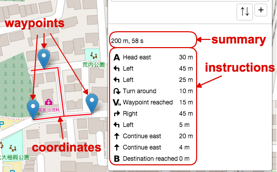
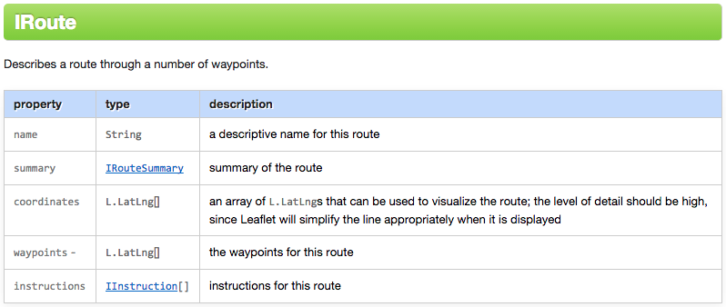
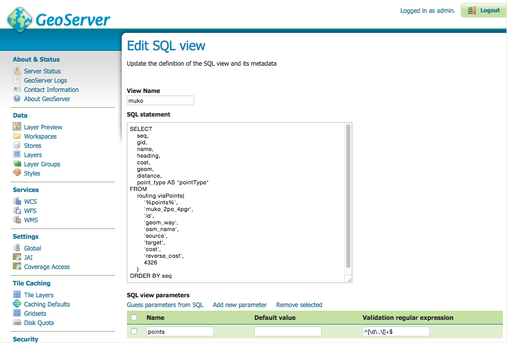
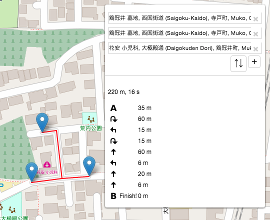

Leaflet Routing Machine (LRM) pgRouting プラグイン
- LRM プラグイン インターフェースの確認
- サーバ側設計
- クライアント側処理
- デモ
LRM プラグイン インターフェースの確認 1/2
?loc=34.944479,135.702857&loc=34.944916,135.702972&loc=34.944530,135.703476
LRM プラグイン インターフェースの確認 2/2
- サーバからレスポンスを取得
- 結果をパースし、フォーマットしてから、LRM の IRoute インターフェースのオブジェクトに渡す


- LRM は中継点とルート座標を地図上に描画し、要約と案内をパネルに表示
サーバ側設計 1/3
- 簡易のため、GeoServer WFS レイヤ (SQL ビュー) + PL/pgSQL ラッパー関数を使用
- PL/pgSQL ラッパー関数は経由点をパースし、各経由点間について、"pgr_trsp" 関数を呼び出す
- GeoServer は複数ジオメトリカラムのレイヤをサポートしていないので、PL/pgSQL が"点の種別"属性をマージした TRSP の結果をエッジを返すよう設計
| 値 |
意味 |
| 1 |
エッジの開始ノードがルートの始点(出発点) |
| 2 |
エッジの終了ノードがルートの終点(到着点) |
| 4 |
エッジの開始ノードが経由点 |
| 8 |
エッジの終了ノードが経由点 |
サーバ側設計 2/3
- PL/pgSQL ラッパー関数 -
CREATE OR REPLACE FUNCTION routing.viaPoints(
IN points text, -- Format: "Lng,Lat|Lng,Lat|..."
IN tbl varchar DEFAULT 'osm_2po_4pgr'::varchar, -- Edge table name
: -- Other default values
OUT seq integer,
OUT gid integer,
OUT name text, -- Road name
OUT heading double precision, -- Angle from edge start to edge end (not used)
OUT cost double precision,
OUT geom geometry, -- Edge geometry (ordered)
OUT distance double precision,
OUT point_type smallint -- Point type
)
RETURNS SETOF record AS
:
- 指定された経由点の文字列をパース
- 各経由点の最近隣エッジとエッジ内の位置、スナップされた点座標を取得
- 各経由点について、"pgr_trsp" 関数を呼び出す
サーバ側設計 3/3
- GeoServer SQL ビューを設定し、経由点のパラメータを PL/pgSQL ラッパー関数に渡す

クライアント側処理 1/5
- 経由点を "viewparams" 値として、GeoServer WFS レイヤにリクエスト
options: {
serviceUrl: 'http://localhost:8080/geoserver/pgrouting/wfs',
timeout: 30 * 1000,
urlParameters: {
version: '1.0.0',
request: 'GetFeature',
outputFormat: 'application/json'
}
},
:
route: function(waypoints, callback, context, options) {
:
url = this.buildRouteUrl(waypoints, options);
:
corslite(url, L.bind(function(err, resp) {
:
クライアント側処理 2/5
buildRouteUrl: function(waypoints, options) {
var points = [],
i,
baseUrl;
for (i = 0; i < waypoints.length; i++) {
points.push(waypoints[i].latLng.lng + '\\,' + waypoints[i].latLng.lat);
}
baseUrl = this.options.serviceUrl + L.Util.getParamString(L.extend({
typeName: this._typeName,
viewparams: 'points:' + points.join('|')
}, this.options.urlParameters), baseUrl);
return baseUrl;
},
クライアント側処理 3/5
- GeoServer WFS レイヤからレスポンスを取得
route: function(waypoints, callback, context, options) {
:
corslite(url, L.bind(function(err, resp) {
:
if (!timedOut) {
if (!err) {
data = JSON.parse(resp.responseText);
this._routeDone(data, wps, callback, context);
:
クライアント側処理 4/5
_routeDone: function(response, inputWaypoints, callback, context) {
var alts = [],
:
for (i = 0; i < response.features.length; i++) {
feature = response.features[i];
edgeCoords = this._coordsToLatLngs(feature.geometry.coordinates);
if ((feature.properties.pointType & 1) || (feature.properties.pointType & 4)) {
viaCoords.push(edgeCoords[0]);
viaIndices.push(routeCoords.length);
}
if (feature.properties.pointType & 2) {
viaCoords.push(edgeCoords[edgeCoords.length - 1]);
viaIndices.push(routeCoords.length + edgeCoords.length - 1);
}
instructions = instructions.concat(this._convertInstructions(feature.properties, routeCoords, edgeCoords));
routeCoords = routeCoords.concat(edgeCoords);
totalDistance += feature.properties.distance;
totalTime += feature.properties.cost * 3600;
}
actualWaypoints = this._toWaypoints(inputWaypoints, viaCoords);
alts.push({
name: '',
coordinates: routeCoords,
instructions: instructions,
summary: {
totalDistance: totalDistance,
totalTime: Math.round(totalTime)
},
inputWaypoints: inputWaypoints,
waypoints: actualWaypoints,
waypointIndices: viaIndices
});
callback.call(context, null, alts);
},
クライアント側処理 5/5
- 結果のルートと経由点が地図上に描画される
- 結果の要約と案内がパネルに表示される
